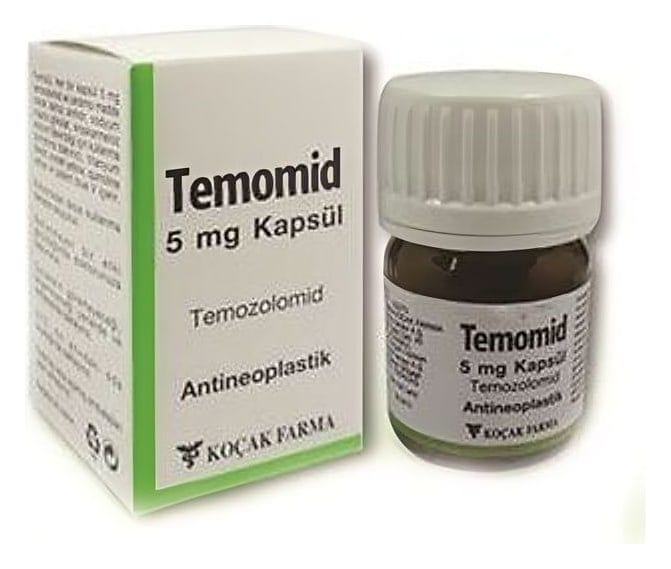

Temomid 20 mg Kapsül, 5 Adet

Ne için kullanılır
KT · Bölüm 1TEMOMİD, kutuda, beyaz plastik kapaklı renkli cam şişede, 5 ve 20 adet kapsüller halinde amba lajlanmıştır. Kapsüllerin kap kısmı beyaz, kapak kısmı turuncudur. Açık pembe renkli toz içerir.
TEMOMİD, bazı özel beyin tümörlerinin tedavisinde kullanılır: - Yeni tanı almış glioblastoma multiforme'li erişkinlerde TEMOMİD önce radyoterapi ile birlikte (tedavinin eş zamanlı aşamasında) ve sonra tek başına (tedavinin monoterapi aşamasında) kullanılır. -Glioblastoma multiforme veya anaplastik astrositom gibi malign gliomu olan 3 yaş ve üstü çocuklarda ve yetişkin hastalarda, standart tedavi sonrası hastalık geri dönerse veya kötüleşirse TEMOMİD kullanılır.
TEMOMİD , bir cilt kanseri türü olan metastatik melanom hastalarının tedavisinde kullanılır.